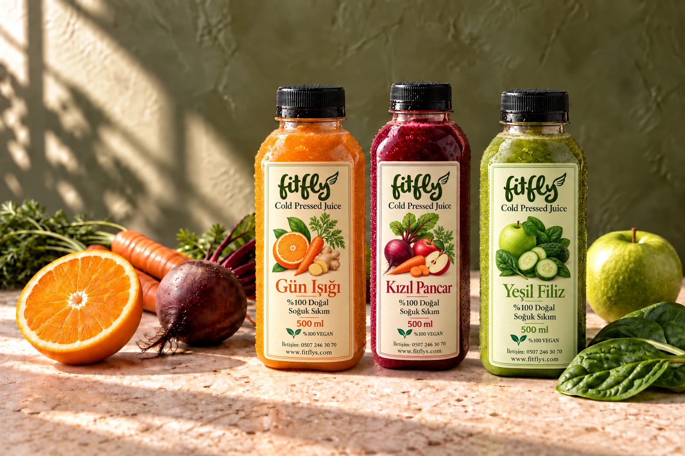
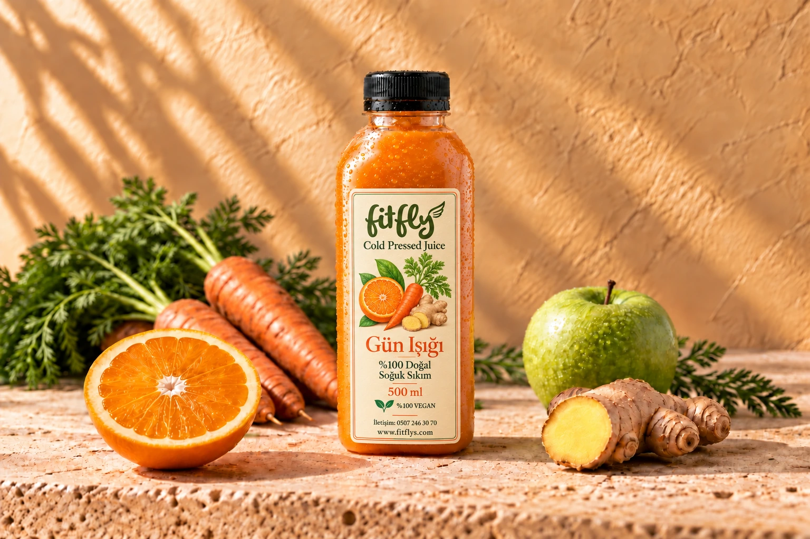
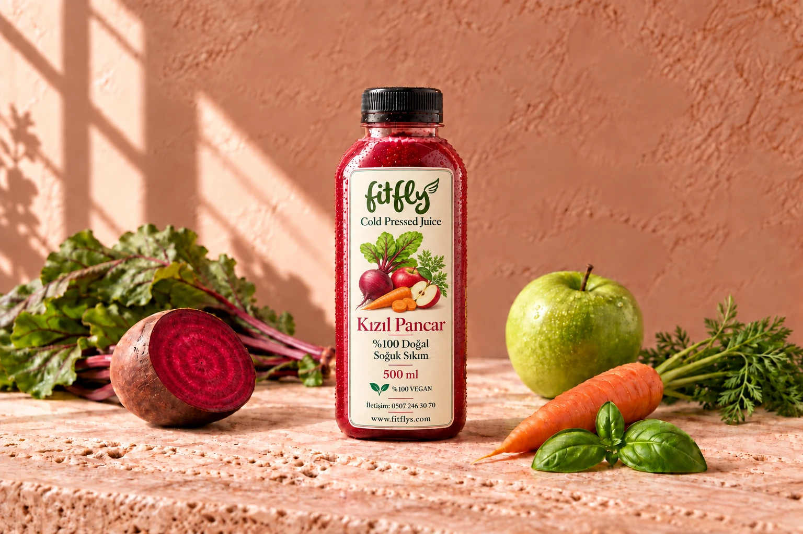
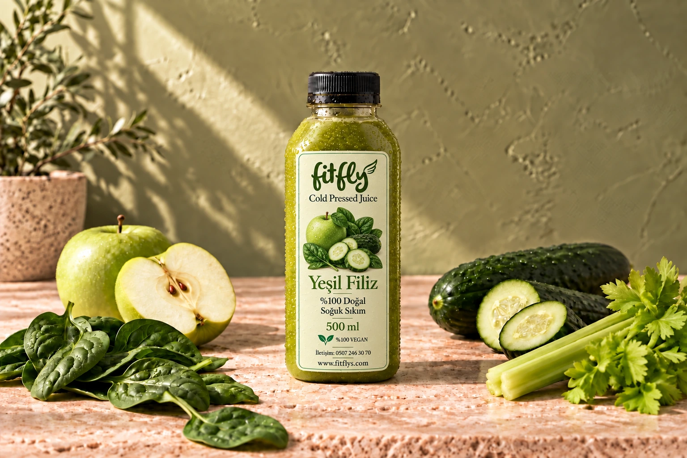
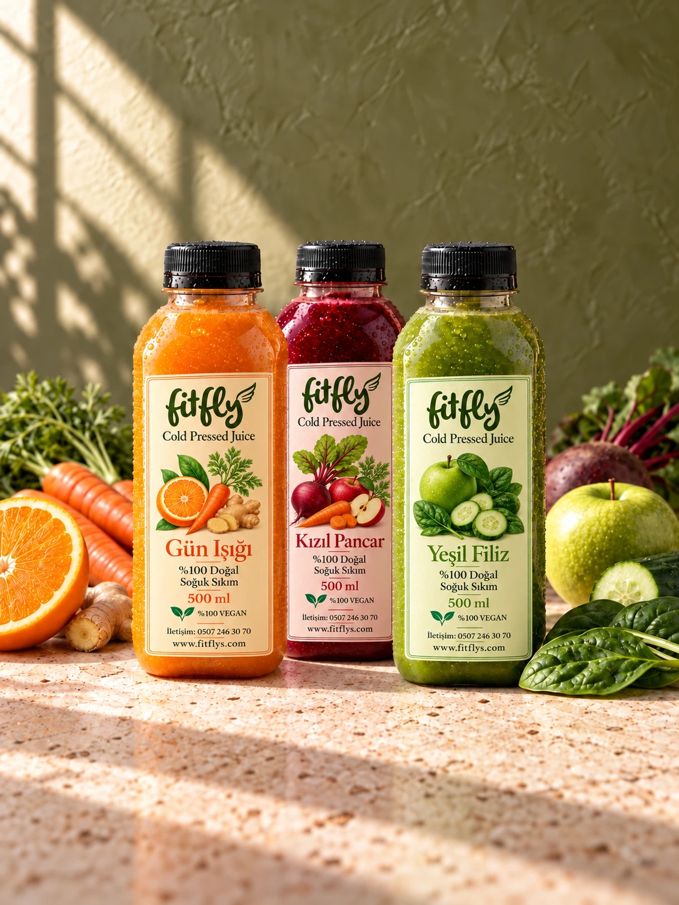

DOĞADAN, ÖZENLE.
İyi beslenmeninen tazehali.
Meyve, sebze ve bitkilerden özenle hazırlanan soğuk sıkım içecekler.
İçeceklerimizi keşfet

01 — NARENCİYE & KÖK SEBZELER
Gün Işığı.
Güne, iyi bir başlangıç.
Portakalın canlı tadı, havucun yumuşaklığı ve zencefilin hafif sıcaklığı. Meyve ve sebzeyi aynı şişede buluşturan dengeli bir tarif.
Şişenin içindekiler
- Portakal
- Havuç
- Yeşil elma
- Zencefil
- Limon
- Nane
Canlı narenciye. Yumuşak bir bitiş.

02 — PANCAR & AROMATİK BİTKİLER
Kızıl Pancar.
Köklerden gelen karakter.
Pancarın kendine özgü tadını yeşil elma ve portakalla dengeliyoruz. Nane ve fesleğen, bu koyu kırmızı karışıma ferah bir son dokunuş katıyor.
Şişenin içindekiler
- Pancar
- Havuç
- Yeşil elma
- Portakal
- Zencefil
- Limon
- Nane
- Fesleğen
Topraksı, meyvemsi, hafif aromatik.

03 — YEŞİL SEBZELER & ELMA
Yeşil Filiz.
Yeşile biraz daha yer aç.
Ispanak, salatalık ve kereviz sapı; yeşil elmayla dengelenen bitkisel bir karışım. Taze otlar ve zencefil, her yuduma ayrı bir katman ekliyor.
Şişenin içindekiler
- Ispanak
- Salatalık
- Kereviz sapı
- Yeşil elma
- Havuç
- Maydanoz
- Nane
- Fesleğen
- Zencefil
Bitkisel, ferah, elmayla dengeli.
İYİ MALZEME. ÖZENLİ YÖNTEM.
Doğanın tadına
özen gösteriyoruz.
Soğuk sıkım, meyve ve sebzelerin ısı uygulanmadan mekanik presle sıkılmasıdır. FitFlys tariflerinin başlangıç noktası, malzemenin kendisi.
- 01
Her malzemenin bir yeri var.
Meyve, sebze ve bitkileri her tarifin tat dengesine göre bir araya getiriyoruz.
- 02
Hijyen ve tazeliğe özen.
Şişe temizliğinden doluma kadar hijyenik koşullara dikkat ediyor, ısı uygulamadan ürünlerin besin değerini korumaya özen gösteriyoruz.
- 03
Bir şişe, kendi karakteri.
Üç ayrı tarif. Üç ayrı lezzet. Her biri 500 ml.

Özeni hissedilir.
KURUCU & SERBEST GİRİŞİMCİ
Ahmet Akay
kim?
FitFlys’in kurucusu ve serbest girişimci Ahmet Akay, markayı doğanın sunduğu her parçaya değer verme fikriyle hayata geçirdi.
Soğuk sıkımdan sonra kalan posaları değerlendirmek de bu yaklaşımın bir parçası. FitFlys’in hikâyesi, daha özenli bir üretim fikriyle başladı.
Doğadan, özenle. fitflys.
Yeniden keşfet